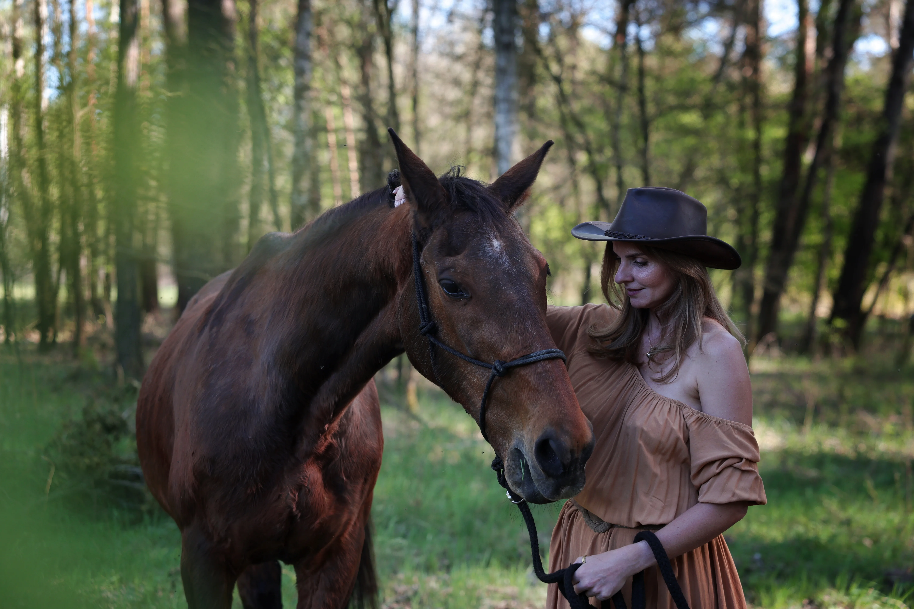
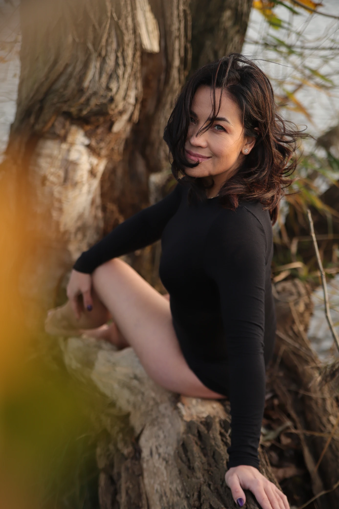
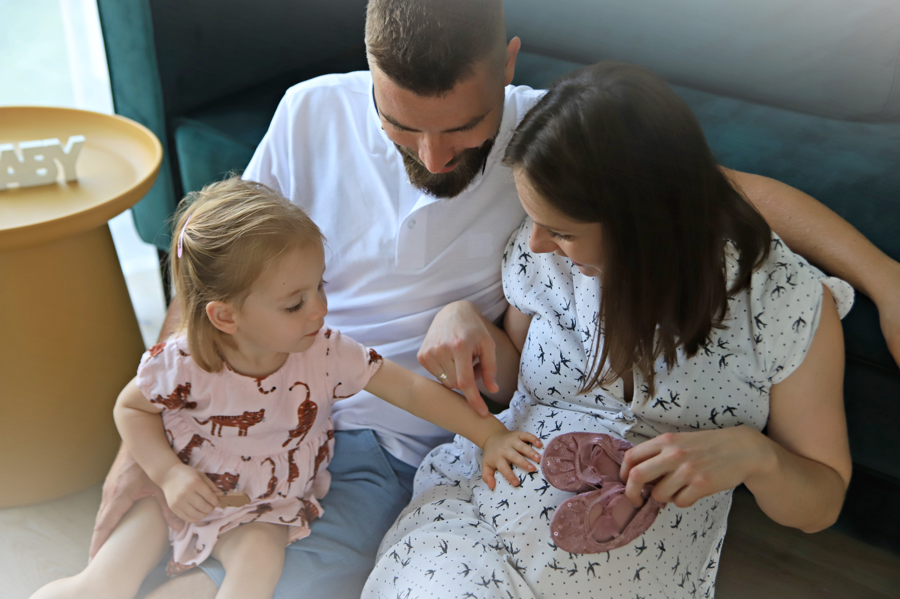
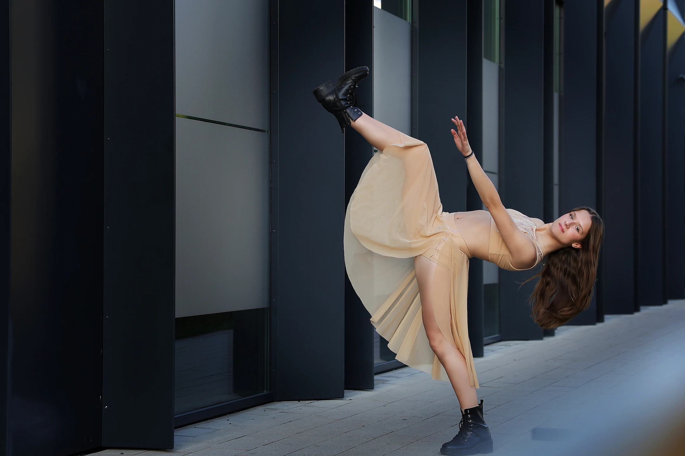
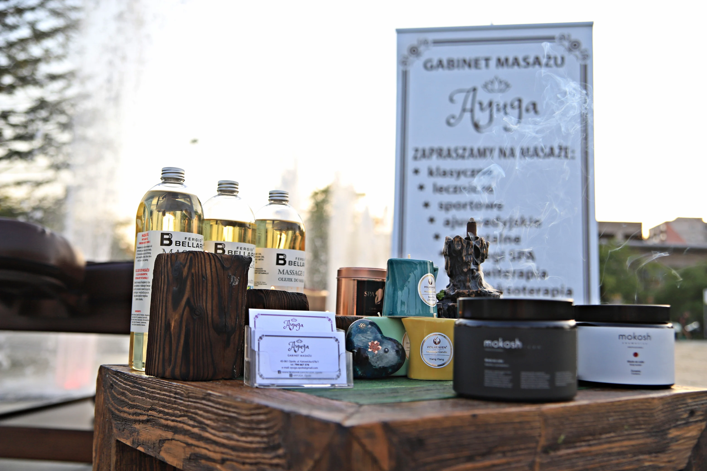
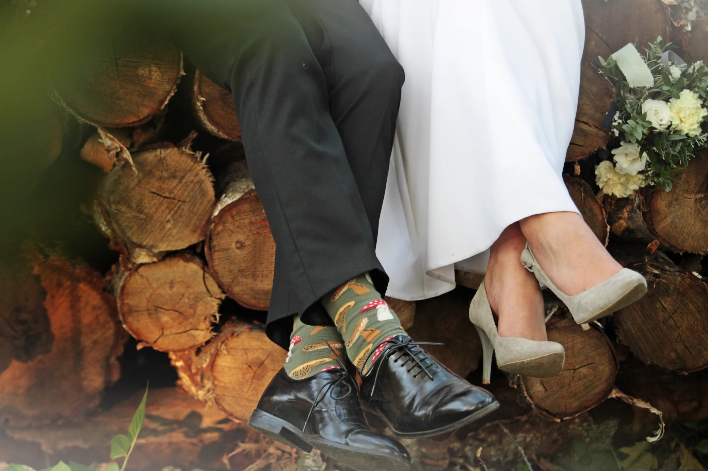
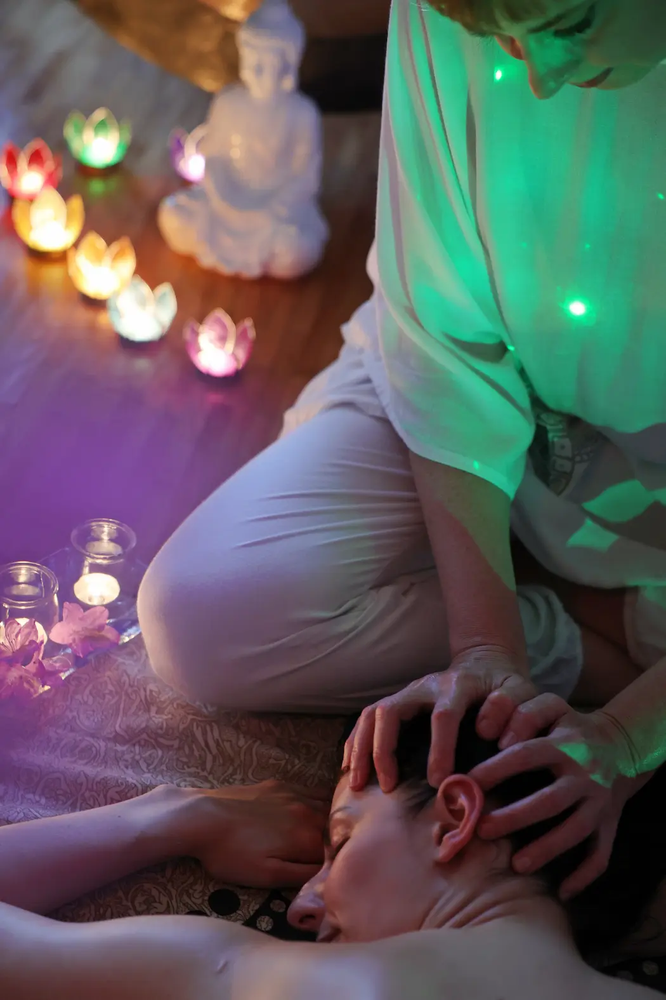

Spotkania
Za każdym zdjęciem stoi historia. Oto kilka z nich.

01
Spotkania z kobietą
Każda kobieta ma swoją historię. Podczas naszych spotkań tworzę przestrzeń, w której możesz na chwilę zwolnić, poczuć się swobodnie i zobaczyć siebie z nowej perspektywy.
To nie tylko sesja zdjęciowa. To spotkanie z samą sobą.

02
Spotkania rodzinne
Najpiękniejsze wspomnienia rodzą się w prostych chwilach. Fotografuję bliskość, czułość i codzienność — bez wymuszonych uśmiechów i sztucznych póz.
Tworzę fotografie, do których będziecie wracać przez lata.

03
Spotkania z tańcem
Ruch opowiada historie, których nie da się wyrazić słowami. Fotografuję tancerzy podczas spektakli, wydarzeń i plenerów.
Zatrzymuję emocje, energię i piękno chwili — nawet wtedy, gdy wszystko dzieje się w ułamku sekundy.

04
Spotkania z marką
Każda marka ma swoją historię. Pomagam ją opowiedzieć poprzez autentyczne fotografie, krótkie filmy i spójną komunikację wizualną.
Buduję wizerunek oparty na zaufaniu, emocjach i prawdziwości.

05
Spotkania z wydarzeniem
Reportaż
Fotografuję kameralne uroczystości, reportaże oraz wydarzenia biznesowe.
Jestem tam, gdzie dzieją się prawdziwe emocje — dyskretnie obserwując i zatrzymując najważniejsze momenty.

06
Spotkania z uważnością
Towarzyszę sesjom jogi, masażu, warsztatom i spotkaniom, podczas których najważniejszy jest spokój, oddech i obecność.
Tworzę fotografie oddające atmosferę tych wyjątkowych chwil — bez pośpiechu i bez zbędnej ingerencji.
07 · Najbliżej mi
Spotkania z portretem
Portret jest mi najbliższy, bo pozwala zatrzymać to, czego często nie widać na pierwszy rzut oka.
Nie szukam idealnych póz ani wyreżyserowanych uśmiechów. Szukam spojrzenia, emocji i prawdy, które czynią każdy portret niepowtarzalnym.
Wierzę, że oczy potrafią opowiedzieć historię lepiej niż słowa.
Dlatego tworzę portrety, które nie pokazują tylko wyglądu — pokazują człowieka.
Może czas na Twoje spotkanie?
Nie obiecuję Ci idealnych zdjęć.
Obiecuję Ci prawdziwe spotkanie.
Jeśli czujesz, że to może być coś dla Ciebie, napisz. Porozmawiajmy.
Skontaktuj się